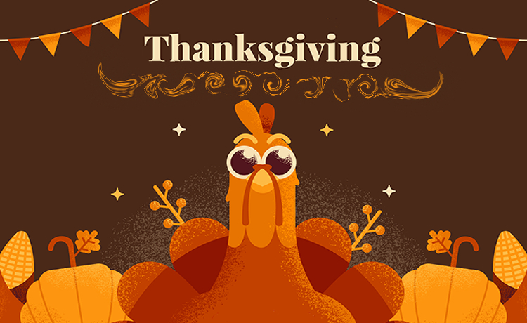
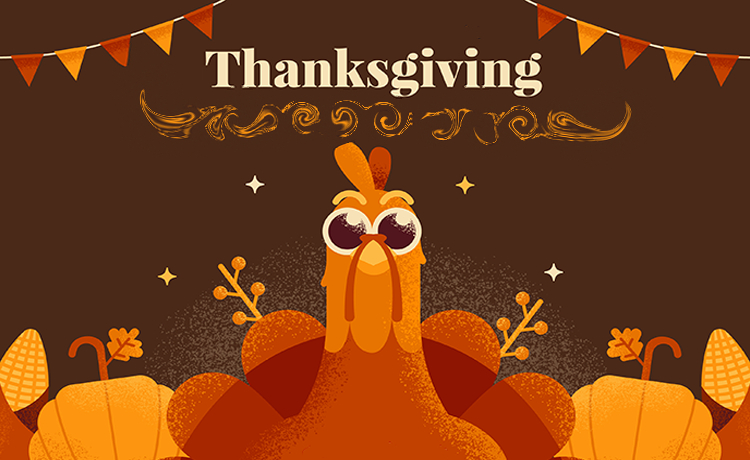
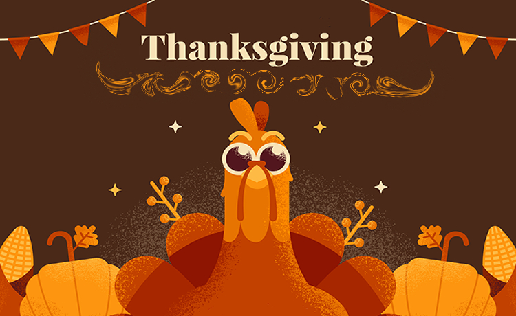
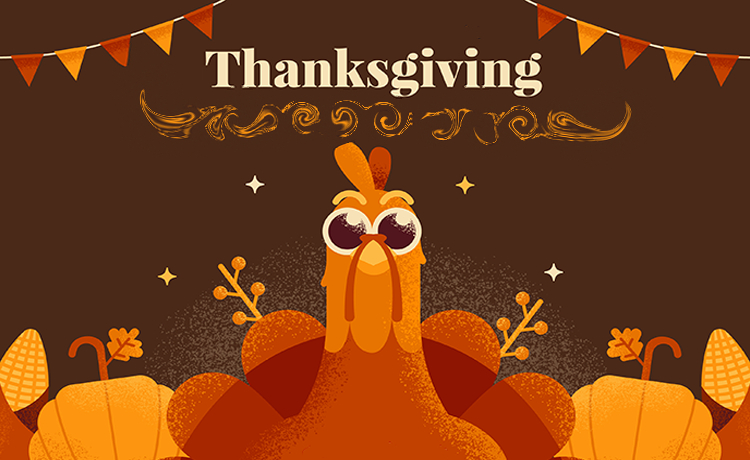

Happy Thanksgiving! üçÇüçÅ
Gratitude is the recognition and appreciation for what you have, promoting happiness and well-being. Thanksgiving is a holiday, mainly in the USA and Canada, dedicated to expressing gratitude for the year's victories, originating in the 17th century with the celebration of harvests by European settlers. It promotes reflection, gratitude and fraternization.

This phrase is said by the fox to the Little Prince during their farewell, after they have formed a special bond. It emphasizes that the most important things cannot be seen with the eyes but must be felt with the heart. This understanding awakens gratitude, as it teaches us to value the feelings and deep connections we have with people and experiences. By recognizing the true value of these connections, which are often invisible to the eyes, we learn to be more grateful for their presence and the impact they have on our lives.
Thanksgiving is a recurring theme in cinema, often used to create stories that range from comedy to drama. Series like Friends, Brooklyn Nine-Nine, and Gilmore Girls show different contexts, but in all of them, the union of people who love each other brings humor and emotion, exploring the challenges and connections between characters. Additionally, the holiday serves as a backdrop to highlight issues of identity, cultural diversity, and social themes. The date is also strategic for the release of prominent films, marking the beginning of the awards season in Hollywood.